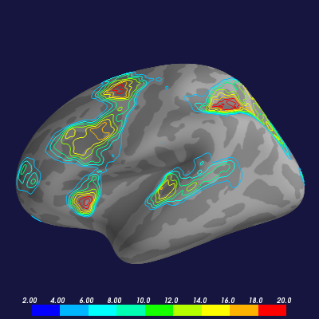

Load a statistical overlay as a “topographic” contour map.
Python source code: plot_fmri_contours.py
print __doc__
import os.path as op
from surfer import Brain
"""
Bring up the visualization.
Contour maps looks best with the "low_contrast" cortex
colorscheme, so we will pass that as an option to the
Brain constructor.
"""
brain = Brain("fsaverage", "lh", "inflated",
config_opts={"cortex": "low_contrast",
"background": "#151540"})
"""
Get a path to the overlay file
"""
overlay_file = op.join("example_data", "lh.sig.nii.gz")
"""
Add the contour overlay with the default display settings
Contours overlays only ever use the positive components of
your image, but they get threshold and colormap saturation
from your configuration settings just as normal overlays do.
"""
brain.add_contour_overlay(overlay_file)
"""
The Brain object can only display one contour overlay at a time,
So if we bring up another one, it will remove the original overlay
behind the scenes for us. Here let's specify a different number of
contours and use a different line width.
"""
brain.add_contour_overlay(overlay_file,
max=20,
n_contours=9,
line_width=2)
"""
At the moment, the Brain object itself does not expose an interface
to manipulate what the contour overlay looks like after it has been
loaded, but if you know a little bit about the underlying Mayavi
engine, you can control aspects of the visualization through the
contour dictionary attribute.
"""
brain.contour['surface'].actor.property.line_width = 1
brain.contour['surface'].contour.number_of_contours = 10
"""
We can save several different views of this hemisphere to one file.
"""
brain.save_montage('examples/fmri_activation.png', colorbar='auto')